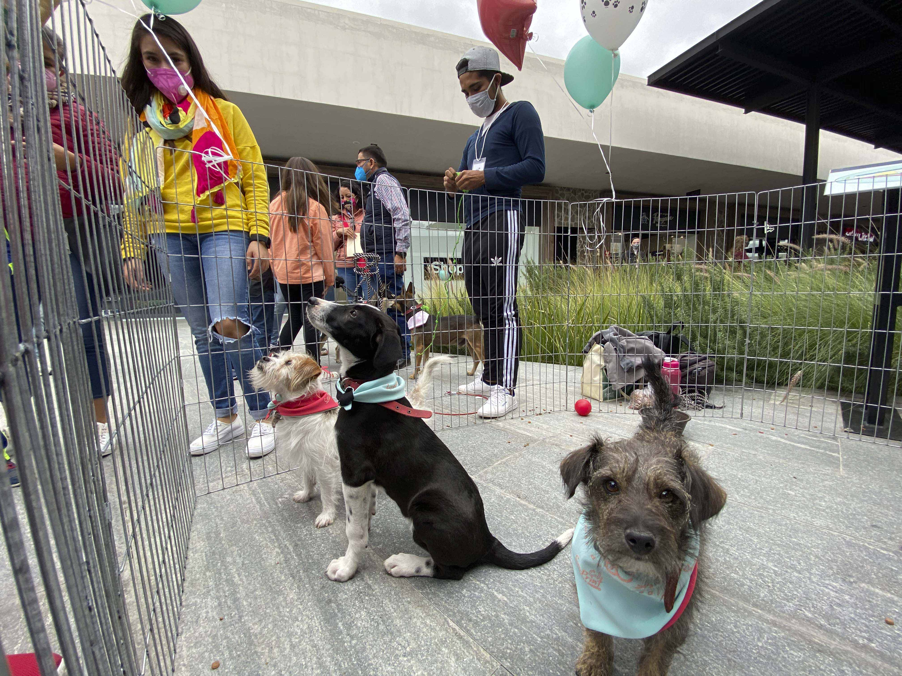
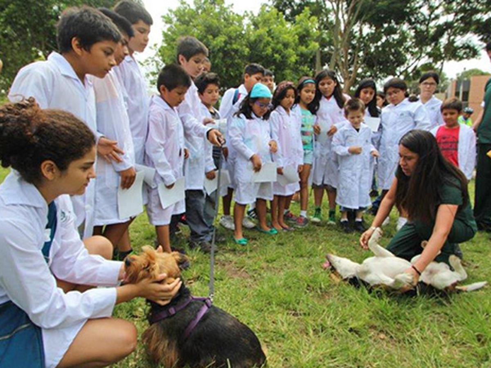
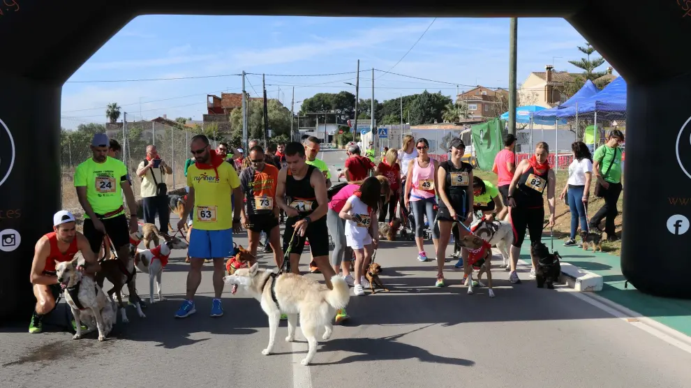
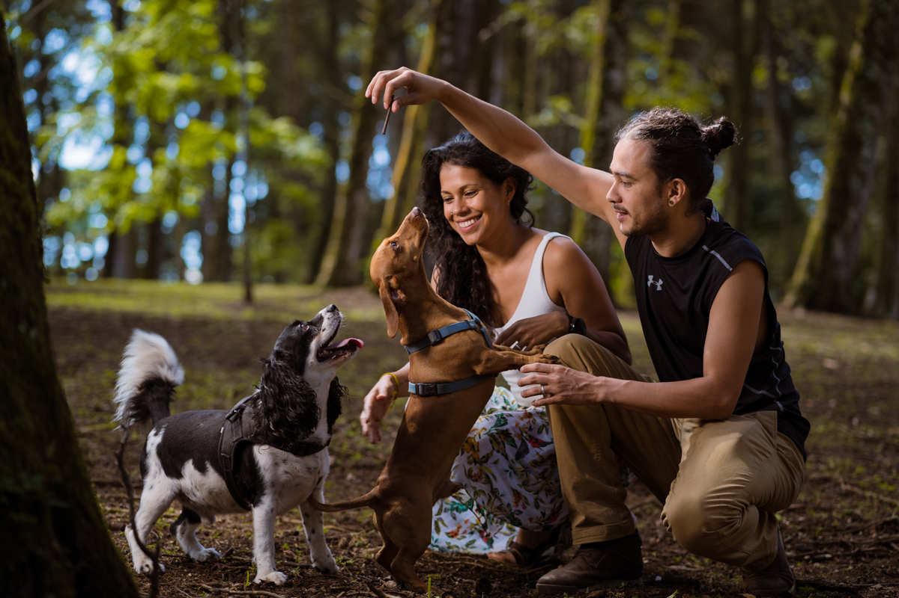

Eventos de AnimalShelter
Únete a nuestras actividades y ayuda a hacer la diferencia en la vida de los animales
Evento Destacado

Gran Feria de Adopción
15 de Julio, 2025
Parque Central
Ven y conoce a nuestros adorables perros y gatos en busca de un hogar amoroso. ¡Podrías encontrar a tu nuevo mejor amigo!
Próximos Eventos

Taller de Cuidado de Mascotas
5 de Agosto, 2025
Centro Comunitario

Carrera Benéfica "Patas a Correr"
20 de Agosto, 2025
Parque Metropolitano

Sesión de Fotos con Mascotas
10 de Septiembre, 2025
Estudio Fotográfico Central
¿Quieres ser voluntario?
Únete a nuestro equipo de voluntarios y ayuda a hacer una diferencia en la vida de los animales necesitados.
Ser Voluntario